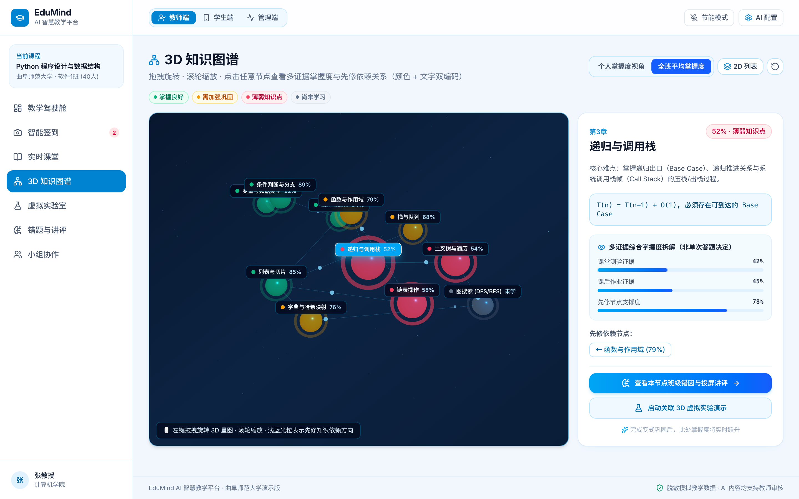
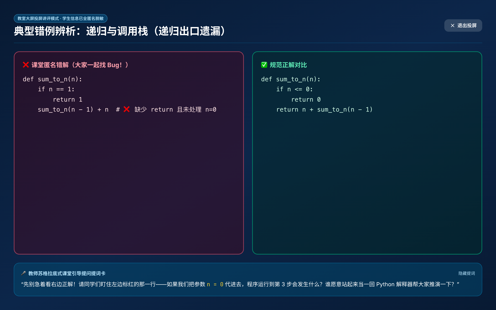

让老师更容易教，让学生真正学会 · 课前/课中/课后全链路闭环
EduMind 是一款面向高校师生的 AI 原生智慧教学平台，聚焦“让老师更容易教，让学生真正学会”，围绕课前、课中、课后构建完整教学闭环，产出可直接用于真实课堂与课后讲评。
针对传统教学平台“考勤易代签、课堂参与难量化、作业批改讲评耗时、学生薄弱点不清晰”四大痛点，EduMind 创新采用教师桌面驾驶舱 + 学生移动端（底部 5 栏）双端形态：课前通过浏览器端 MediaPipe 21 关键点模型实现“指定手势 + 实景拍照 + 教师人工复核”真实签到；课中提供绑定课件页码的 AI 课堂副驾驶、中英双语术语字幕、AI 实时出题与自动课堂笔记；课后通过四维错因诊断联动 Three.js 3D 知识图谱与 3D 虚拟实验室，并支持教师一键开启脱敏错例大屏投屏讲评、风格化评语模板与 A/B/C 分层巩固作业导出。
作品以 TRAE 为主力 AI 研发工具完成前端工程构建、交互调试与上线部署，所有演示均采用自建脱敏模拟课程数据，支持教师审核与低性能降级，现已部署上线（https://sjz-wgh.cn/），开箱即可体验全流程闭环。
| 目标用户 | 专属终端形态 | 真实教学与学习痛点 | EduMind 闭环解决方案 |
|---|---|---|---|
| 高校教师 / 师范生 | 桌面端数据驾驶舱 | 作业批改后统计错因、写差异化评语、制作讲评 PPT 耗时极高；二维码签到易代签。 | 四维错因聚类 + 一键教室脱敏投屏讲评 + 教师风格评语模板 + A/B/C 分层作业导出。 |
| 在校大学生 | 移动端 App（底部 5 栏） | 课上听不懂不敢提问；抽象算法（如递归调用栈）难理解；错题只知对错不懂根因。 | 匿名问课件上下文 AI 副驾驶 + 3D 虚拟实验动手演练 + 变式通关实时点亮 3D 图谱。 |
| 教务与管理员 | 运维与合规中心 | 签到影像存在隐私合规风险、班级权限与 AI 调用缺乏审计。 | RBAC 权限隔离、AI 调用监控、签到影像 24h 自动销毁策略与口令替代签到通道。 |


hand_landmarker.task（7.5MB）直接托管在自有服务器 /mediapipe/，通过手掌归一化尺度精准区分剪刀手/大拇指/OK/比心/握拳/张开手掌，摆错手势即时拦截。| 环节 | 使用工具 | 如实说明与合规标注 |
|---|---|---|
| 核心代码编写与重构 | TRAE（主力 AI IDE） | 由 TRAE 辅助生成前端工程框架、Three.js 3D 知识图谱、3D 调用栈实验室、移动端底部 5 栏重构及部署脚本，人工负责产品决策、交互验收与真机测试。 |
| 端侧手势识别 | TRAE + MediaPipe | 采用 Apache-2.0 协议开源模型 hand_landmarker.task，结合 TRAE 编写的 21 关键点归一化几何分类器在浏览器端本地推理。 |
| 课程素材与数据合规 | AI 辅助草拟 + 人工审校 | 内置《Python 程序设计与数据结构》课件、字幕与错题均为自建脱敏模拟数据，不涉及任何真实学生隐私或涉密数据；签到影像明示 24h 自动销毁并提供替代签到通道。 |
| 页码 | 路演主题与演示动作 | 核心演讲话术 |
|---|---|---|
| P1–P2 | 痛点切入（30s） | 老师每天最耗时的是作业批改后的错因统计与讲评备课，而学生手机上操作繁琐、抽象算法听不懂。EduMind 打造教师桌面 + 学生移动的 AI 教学闭环。 |
| P3 | 实操①：真机手势签到（45s） | 打开 https://sjz-wgh.cn/ 切学生端，展示 MediaPipe 21 点骨骼追踪：摆错手势实时拦截，摆对瞬间通过并把实拍照片回传至教师端一键复核。 |
| P4 | 实操②：3D 实验 + 脱敏投屏（60s） | 切教师端演示 3D 调用栈压栈/栈溢出反面案例；一键开启全屏「教室脱敏错例投屏模式」，展示匿名错解对比与苏格拉底追问提词卡，明天上课直接能用。 |
| P5 | 实操③：变式点亮 3D 图谱（30s） | 学生答对递归变式题后回到 3D 知识图谱——「递归与调用栈」节点实时从红色薄弱跃升为绿色掌握良好，闭环眼见为实。 |
| P6 | TRAE 研发、合规与复用（15s） | 全流程依托 TRAE 高效落地，坚持数据脱敏与教师审核权，配置化架构可 10 分钟迁移至高校全学科与中小学研学。谢谢评委！ |